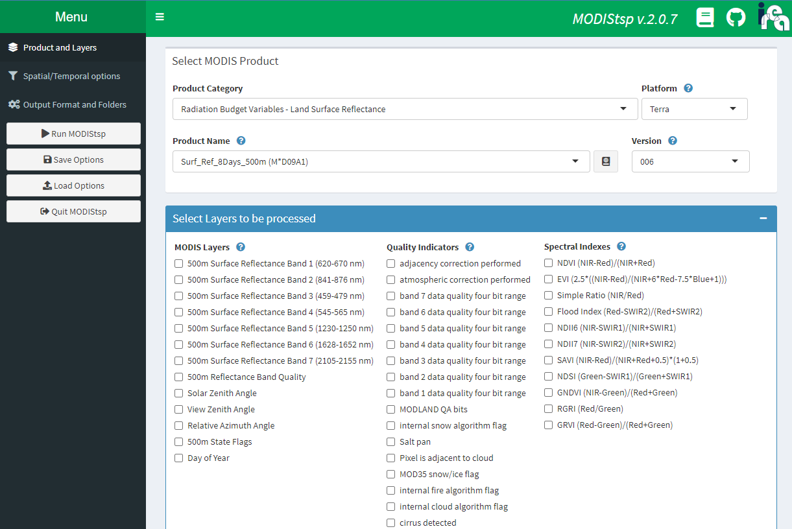
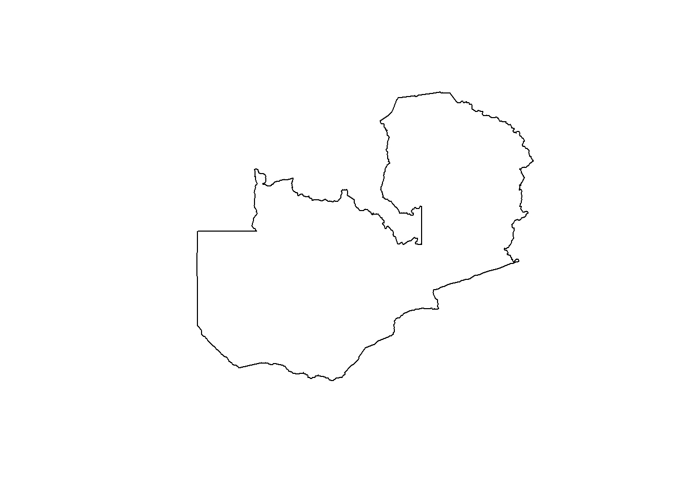
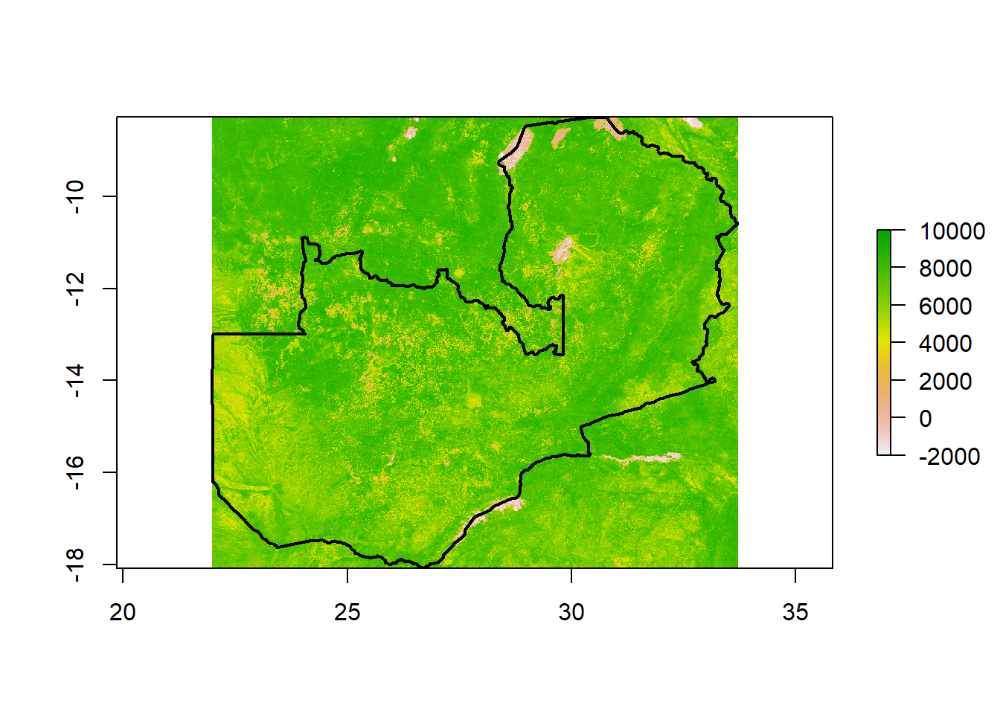
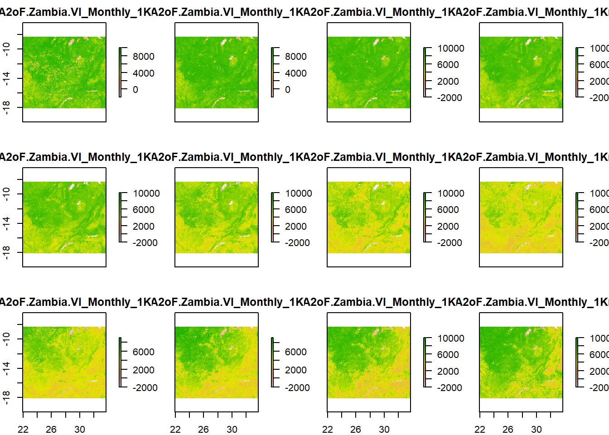

install.packages("MODIStsp")Installation and setup
The MODIStsp package provides an R interface to the raster images derived from MODIS Land Products data. This package provides an interactive user interface, as well as functions for programmatic queries for the time-series rasters. Note that this library requires and active internet connection.
Before installing the package, be sure that you have an NASA EarthData account, which is free and can be created at https://urs.earthdata.nasa.gov/home.
Once you have an active account, you can install the MODIStsp package directly from CRAN.
You can also install the experimental version of the package from the MODIStsp Github repository. The package has excellent documentation, including multiple example articles. The following sections will briefly demonstrate the interactive and non-interactive modes, but be sure to check the package documentation for more details!
Interactive interface
The main function in the MODIStsp package is called MODIStsp(). By default, running this function with any additional input will launch the interactive graphic user interface (GUI) in you web browser.
# Load library
library(MODIStsp)
# Launch graphic interface
MODIStsp()
This GUI will lead to step-by-step through the selection, processing, and outputting workflow.
Starting with the “Products and Layers” section, choose which MODIS product and remote sensed layers you wish to download. Multiple layers can be included for a selected product category. The ? mark icon provide useful information on the various inputs, and the book button next to the Product Name menu will link to the NASA product documentation page, which will contains further details for that product including units, resolution, and aggregation scale factor.
Once the products layers have been selected, move onto the “Spatial/Temporal option” section. Here you can select the time range, projection, and spatial extent. Spatial parameters can be defined by tile selection, bounding box, uploading a shapefile, or by drawing on an interactive map.
Next, move to the “Output Format and Folders” section. This is where you will provide your NASA EarthData user information, and set the destination for your output files. You can use the “Browse” button to selection the output folder on your computer.
Once you have filled out each section you can press the “Run MODIStsp” button on the left menu. This will execute your query and process the download. Download times will depend on your input parameters and internet connection.
Programmatic mode
While the interactive GUI approach may be useful for individual data pulls, you may want to programmatic define your download parameters. This is especially useful to embed within code for analysis, as it serves as documentation and improves reproducibility.
The package documentation also provides an article for using the programmatic approach. This uses the same MODIStsp() function, expect now we have to provide the inputs that we would have used in the GUI directly into the function.
Here is an example for getting monthly NDVI and EVI rasters for Zambia 2021. First we still start by downloading a shapefile for Zambia.
# Load libraries
library(fs) # File management package
library(sf) # Spatial data package
library(raster) # Raster data package
library(MODIStsp) # MODIS package
library(tidyverse) # Data process and viz
# Create a temporary folder for downloaded files
dest <- tempdir()
# Download shapefile for Zambia
shp_url <- paste0("https://raw.githubusercontent.com/",
"PATH-Global-Health/geometries/main/adm0/Zambia/adm0.json")
download.file(url = shp_url, destfile = path(dest, "Zambia.json"))
shp <- st_geometry(st_read(path(dest, "Zambia.json"), quiet = T))
plot(shp)
In this example I created a temporary folder (using the tempdir()) and saved it’s “path” into an object called dest. This is where we will download rasters and other metadata files. You can swap tempdir() with a file path to a location on your computer.
Next, use the MODIStsp() function to download rasters by setting each parameter within the function. Here is the code for download monthly NDVI and EVI raster for 2021 at a 1 kilometer resolution.
Time consuming function
This function may take several minutes or longer to run depending on the number of rasters, their sizes and resolutions, and your internet. Setting parallel = TRUE can help speed up the download.
# user and pass are set based on NASA EarthData account credentials
MODIStsp(
gui = FALSE,
out_folder = dest,
selprod = "Vegetation_Indexes_Monthly_1Km (M*D13A3)",
bandsel = c("NDVI", "EVI"),
sensor = "Terra",
spatmeth = "file",
spafile = path(dest, "Zambia.json"),
output_proj = "+proj=longlat +datum=WGS84 +no_defs",
start_date = "2021.01.01",
end_date = "2021.12.31",
user = user,
password = pass,
verbose = FALSE,
parallel = TRUE
)There are a lot of details, but remeber that we have to supply everything that we would have clicked in the GUI. The benefit of this approach is that we can save it in a script, which means the our process is documented and repeatable.
Defining product, layers, and sensor
We need to tell R which MODIS product and which specific layers from that product we want to download. We do this using the selprod and bandsel arguments, respectively. We can only select one MODIS product at a time, but we can download multiple layers from that product at once.
You can use the MODIStsp_get_prodnames() function to list the available MODIS products, and the MODIStsp_get_prodlayers() function to get a list of available layers.
Finally, we can choose to select layers from either the Terra or Aqua sensors. The default is to pull from both (if both are available), which is fine but may be unnecessary and will take extra time then selecting an individual sensor.
Defining spatial extent and projection
Similar to the GUI, there are multiple options for defining the spatial extent, include using a local shapefile ("file"), the bounding box of a spatial object ("bbox"), or specific tile number from the MODIS Grid ("tile"). While each approach is viable, I’ve had the most success with the "file" method.
We can also set the geographic projection for the rasters using the output_proj argument. This is helpful if the default projection from MODIS does not match other spatial data, such as our shapefile.
Defining time frame and user credentials
Next, we state the time frame for our raster pulls. The number of raster files that will be download within this time frame will depend on the selected product. The input format is a character string with the format "YYYY-MM-DD", not an as.Date() or lubridate-style date.
We also need to supply your username and password for your NASA EarthData account. In this example, I save this information into variables called user and pass, which I defined directly in the R Console rather than in my script, that way any personal credential information is not saved within my script.
Finally, there are many additional arguments that can be included. Some helpful ones are verbose = TRUE, which will print information in your Console during through downloading, and parallel = TRUE, which will speed up the download by using multiple CPU cores.
Loading and plotting data
Let’s data a look at the files in our dest output folder. Since we defined the extent using a shapefile called Zambia.json, the MODIStsp() function created a new folder called Zambia and stored all the of results here. These are all of the raster files that we downloaded.
dir_ls(path(dest, "Zambia"), recurse = T, type = "file") %>%
path_rel(dest) # This function returns the "relative" pathZambia/MODIStsp_2022-07-26.json
Zambia/VI_Monthly_1Km_v6/EVI/MOD13A3_EVI_2021_001.tif
Zambia/VI_Monthly_1Km_v6/EVI/MOD13A3_EVI_2021_032.tif
Zambia/VI_Monthly_1Km_v6/EVI/MOD13A3_EVI_2021_060.tif
Zambia/VI_Monthly_1Km_v6/EVI/MOD13A3_EVI_2021_091.tif
Zambia/VI_Monthly_1Km_v6/EVI/MOD13A3_EVI_2021_121.tif
Zambia/VI_Monthly_1Km_v6/EVI/MOD13A3_EVI_2021_152.tif
Zambia/VI_Monthly_1Km_v6/EVI/MOD13A3_EVI_2021_182.tif
Zambia/VI_Monthly_1Km_v6/EVI/MOD13A3_EVI_2021_213.tif
Zambia/VI_Monthly_1Km_v6/EVI/MOD13A3_EVI_2021_244.tif
Zambia/VI_Monthly_1Km_v6/EVI/MOD13A3_EVI_2021_274.tif
Zambia/VI_Monthly_1Km_v6/EVI/MOD13A3_EVI_2021_305.tif
Zambia/VI_Monthly_1Km_v6/EVI/MOD13A3_EVI_2021_335.tif
Zambia/VI_Monthly_1Km_v6/NDVI/MOD13A3_NDVI_2021_001.tif
Zambia/VI_Monthly_1Km_v6/NDVI/MOD13A3_NDVI_2021_032.tif
Zambia/VI_Monthly_1Km_v6/NDVI/MOD13A3_NDVI_2021_060.tif
Zambia/VI_Monthly_1Km_v6/NDVI/MOD13A3_NDVI_2021_091.tif
Zambia/VI_Monthly_1Km_v6/NDVI/MOD13A3_NDVI_2021_121.tif
Zambia/VI_Monthly_1Km_v6/NDVI/MOD13A3_NDVI_2021_152.tif
Zambia/VI_Monthly_1Km_v6/NDVI/MOD13A3_NDVI_2021_182.tif
Zambia/VI_Monthly_1Km_v6/NDVI/MOD13A3_NDVI_2021_213.tif
Zambia/VI_Monthly_1Km_v6/NDVI/MOD13A3_NDVI_2021_244.tif
Zambia/VI_Monthly_1Km_v6/NDVI/MOD13A3_NDVI_2021_274.tif
Zambia/VI_Monthly_1Km_v6/NDVI/MOD13A3_NDVI_2021_305.tif
Zambia/VI_Monthly_1Km_v6/NDVI/MOD13A3_NDVI_2021_335.tif
Zambia/VI_Monthly_1Km_v6/Time_Series/RData/Terra/EVI/MOD13A3_EVI_1_2021_335_2021_RData.RData
Zambia/VI_Monthly_1Km_v6/Time_Series/RData/Terra/NDVI/MOD13A3_NDVI_1_2021_335_2021_RData.RDataHere we can see more of the default naming conventions. Inside the Zambia folder we have a JSON file the contains the details for the API call that downloaded our raster, and a folder called VI_Monthly_1Km_v6, which matches our selected MODIS product. Inside VI_Monthly_1Km_v6 there are two folders, NDVI and EVI, which are the bandnames for our selected layers. Inside these subfolders, there are 12 .tif raster files. The naming convention for these files is PRODNAME_PRODLAYER_YYYY_DDD.tif where DDD refers to the Julian calendar date (1 to 365) for the starting date for that layer.
There is also a Time_Series subfolder, which contains a .RData file containing a RasterStack object for each layer. Loading this file with load() will an load this object with the default name of raster_ts .
We can load individual rasters into R, and use them from plotting and/or further analysis.
# Load one raster file from the "NDVI" folder
rst <- raster(dir_ls(path(dest, "Zambia", "VI_Monthly_1Km_v6", "NDVI"))[1])
# Plot
plot(rst)
plot(shp, add = T, lwd = 2)
You might notice that the values for this raster are much larger than we would expect for NDVI (which ranges from -1 to 1). If we look in the MODIS Data Catalog for the documentation on this layer we can see that the scale factor for the NDVI layer is 0.0001, meaning that we will want to multiple the raster values by this constant to return the actual values. Next time we pull this raster layer using MODIStsp() we may want to set the scale_val argument to 0.0001 to make this adjustment automatically.
Finally, since all of the rasters are pulled using the same criteria (other the date), they should align. This means that we can use the stack() function to create a RasterStack.
rst_stack <- stack(dir_ls(path(dest, "Zambia", "VI_Monthly_1Km_v6", "NDVI")))
plot(rst_stack)
Citation
BibTeX citation:
@online{millar2022,
author = {Justin Millar},
title = {Downloading {MODIS} Raster Data in {R} with {MODIStsp}},
date = {2022-07-25},
url = {https://PATH-Global-Health.github.io/MNTD-tech-docs//posts/modistsp},
langid = {en}
}
For attribution, please cite this work as:
Justin Millar. 2022. “Downloading MODIS Raster Data in R with
MODIStsp.” July 25, 2022. https://PATH-Global-Health.github.io/MNTD-tech-docs//posts/modistsp.